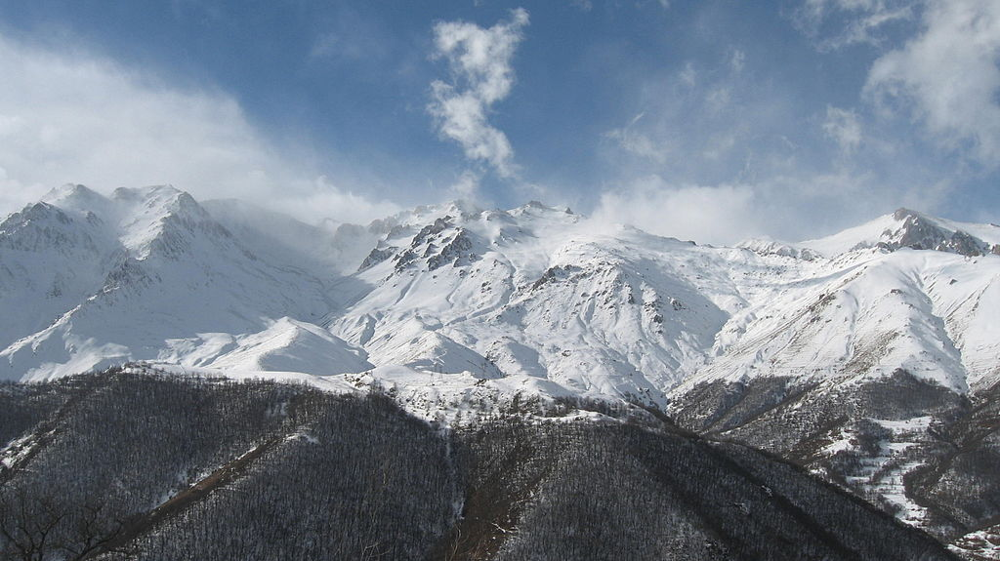

Syunik Province
Syunik is a mountainous region, mainly covered with thick green forests. The Zangezur Mountains occupy most of the territory of Syunik. Mount Kaputjugh with a height of 3905 meters (12,812') and Mount Gazanasar with a height of 3829 meters (12,562') are the highest peaks of the province.
Many of the forests in Syunik are protected by the government, including the Arevik National Park, the Shikahogh State Reserve, the Boghakar Sanctuary, the Goris Sanctuary, the Plane Grove Sanctuary, the Sev Lake Sanctuary, and the Zangezur Sanctuary.
Major water basins include the rivers of Vorotan, Voghji, Sisian, Meghri and Vachagan. Summer temperature can reach up to 40 °C (104 °F), although the average temperature is around 22 °C (72 °F), while in winter it may reach down to -12.5 °C (9.5 °F). Its border with Nakhchivan to the west is defined by the Zangezur Mountains.
The Meghri mountain ridge at the extreme south of Armenia used to be home to the endangered Caucasian leopards. However, only one individual of them was camera-trapped between August 2006 to April 2007, and no signs of other leopards were found during track surveys conducted over an area of 296.9 km2 (114.6 sq mi). The local prey base could support 4–10 individuals, but poaching and disturbance caused by livestock breeding, gathering of edible plants and mushrooms, deforestation and human-induced wildfires are so high that they exceed the tolerance limits of leopards.[10] During surveys in 2013–2014, camera traps recorded leopards in 24 locations in southern Armenia, of which 14 are located in the Zangezur Mountains.